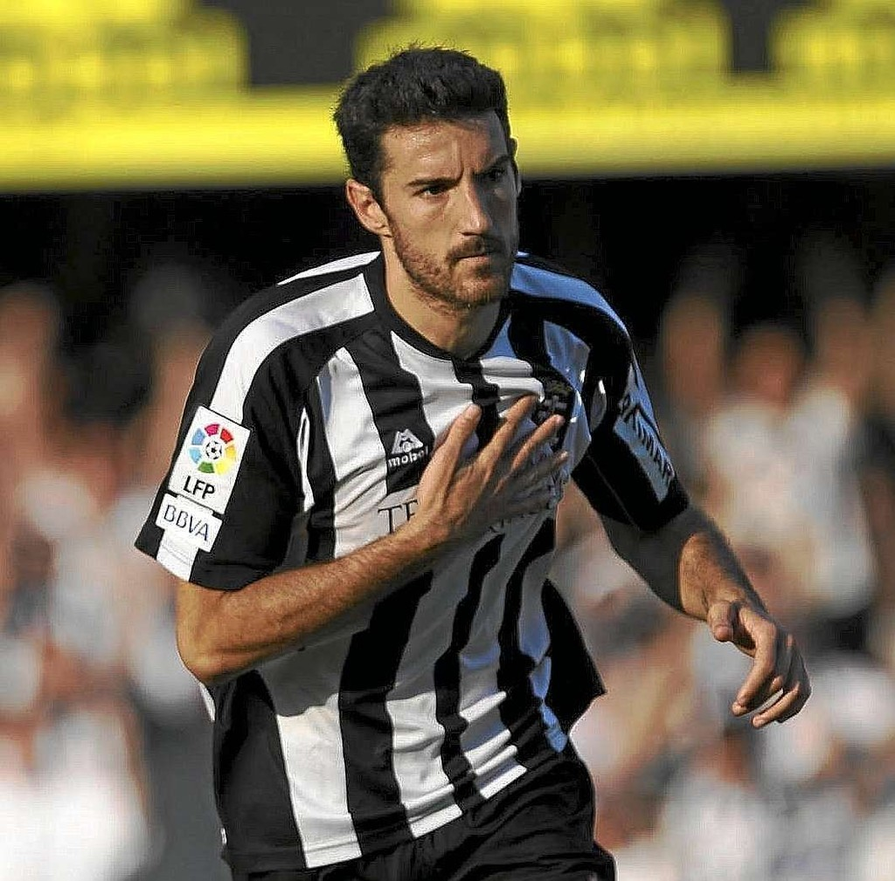

Ruben Castro,el goleador que nunca se cansa de su oficio,tras cumplir los 40 años Ruben sigue con cifras goleadoras viviendo ya su tercera juventud,el salvador del cartagena lleva 12 tantos en liga con un olfato de gol incansable.Y es que en el cuadro albinegro no hay nadie que asemeje sus numeros,el siguiente con mas goles es Alfredo Ortuño con tan solo 3 goloes en lo que llevamos de liga,numeros que hablan muy bien del canario, Actualmente se encuentra como segundo maximo goleador del efese con un total de 66 goles en dos años.
.
En primer lugar tenemos a toché.Una leyenda del conjunto albinegro en las que en cada temporada superaba la friolera de 20 goles,un jugador historico del futbol profesional español que con el cartagena anoto un total de 77 goles.